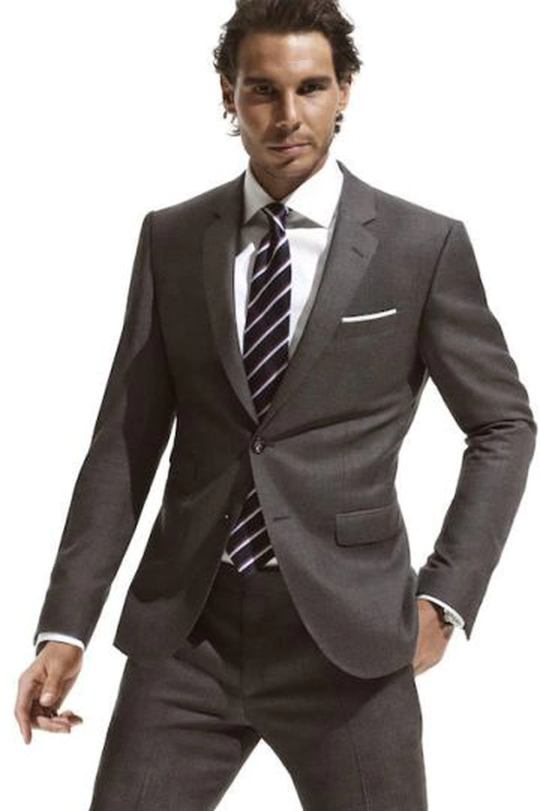
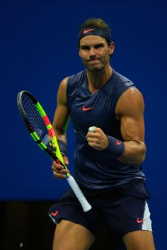
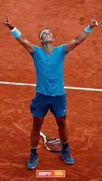
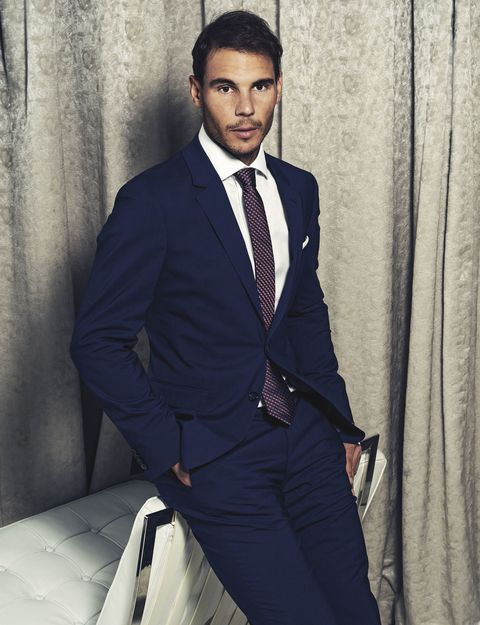

Rafael Nadal
Rafael Nadal Parera (Manacor, Mallorca, España, 3 de junio de 1986), más conocido como Rafa
Nadal, es un tenista profesional español que ocupa la segunda posición del ranking ATP.Está
considerado como el mejor tenista de la historia en pistas de tierra batida y uno de los mejores
de todos los tiempos. Hasta la fecha, es el tenista masculino con mayor número de títulos de
Grand Slam en individuales, con 22, por delante del serbio Novak Djokovic, con 21, y del suizo
Roger Federer, con 20.


Es por mucho el tenista masculino más joven de la historia en conseguir el Golden Slam en
la carrera, que consiste en lograr los cuatro Grand Slam y la medalla de oro en los Juegos
Olímpicos a lo largo de la carrera, logro únicamente compartido con Andre Agassi. Es, junto a
Novak Djokovic, uno de los dos tenistas masculinos en toda la Era Abierta en conseguir el Doble
Grand Slam, que consiste en ganar, al menos dos veces, cada uno de los cuatro Grand Slam a lo
largo de toda su carrera.


Es el tenista español con más semanas en el número uno del ranking mundial de la ATP, con
209. Es el único tenista en la historia en ser número uno en tres décadas diferentes: 2000, 2010
y 2020 y además, es el cuarto tenista por cantidad de victorias en toda la historia, con 1067, y
cuenta con el segundo mejor rendimiento de la historia con un 83,1 % de victorias, llegando a
alcanzar un pico de 83,84 % después de Roland Garros 2014.


Ocupa la cuarta posición en la lista de jugadores con más títulos ATP con 92, sólo por
detrás de Jimmy Connors (109), de Roger Federer (103) y de Ivan Lendl (94). Es el tenista con
más títulos (90) y victorias (972) en outdoor y el tenista con más títulos conseguidos en tierra
batida (63) de toda la Era Abierta y con practicamente todos los recors posibles en la
superficie, superando con gran diferencia a sus mas cercanos perseguidores.

